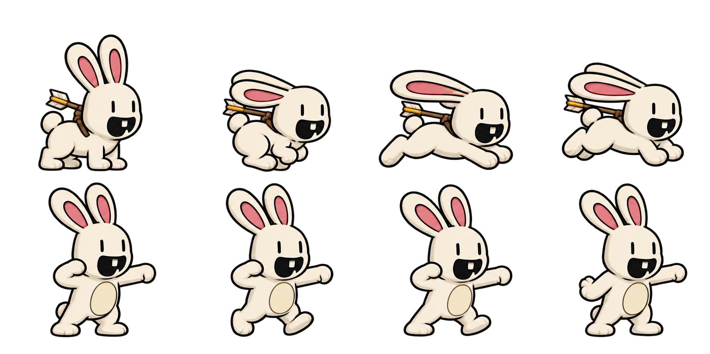

A reusable enchanted arrow waits in the labyrinth. Carry it up the second volcano, then move left/right, aim up/down and fire. Stow the arrow to run and jump normally; its image stays on the bunny’s back. In the labyrinth, climb up/down with it equipped or stowed. Aiming disables jumps. The dotted arc shows its flight. Arrows can knock out fireballs; the king’s shield blocks shots from the front.
Keyboard: ← → move, ↑ ↓ aim, X or F fire. E or the extra STOW/EQUIP button puts the arrow away or draws it in the labyrinth, on the second climb and at the summit. When stowed, ↑ or Space jumps on the hills and summit; ↑ ↓ climbs in the labyrinth. Touch: drag the stick to move or aim, tap FIRE to shoot and STOW to return to jumping.
